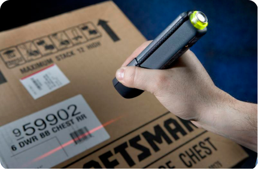
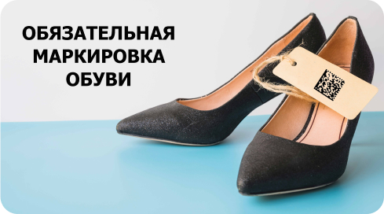
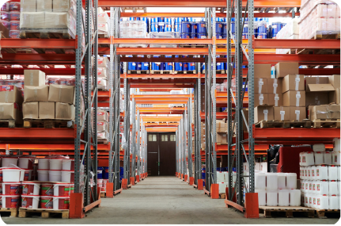

Маркировка

Маркировка - нанесение на упаковку или этикетку сгенерированного цифрового кода: электронного точечного двухмерного кода формата Data Matrix. Основной целью маркировки товаров является повышение защиты и снижение оборота фальсифицированной и контрафактной продукции.

Маркировка одежды и текстиля В ОФД-НН есть всё для маркировки товаров легкой промышленности: принимайте, отгружайте и продавайте одежду и белье по новым правилам, обменивайтесь ЭДО, ведите учет — данные по каждой операции отправляются в систему маркировки одежды автоматически.

Маркировка одежды и текстиля В ОФД-НН есть всё для маркировки товаров легкой промышленности: принимайте, отгружайте и продавайте одежду и белье по новым правилам, обменивайтесь ЭДО, ведите учет — данные по каждой операции отправляются в систему маркировки одежды автоматически.

Маркировка одежды и текстиля В ОФД-НН есть всё для маркировки товаров легкой промышленности: принимайте, отгружайте и продавайте одежду и белье по новым правилам, обменивайтесь ЭДО, ведите учет — данные по каждой операции отправляются в систему маркировки одежды автоматически.